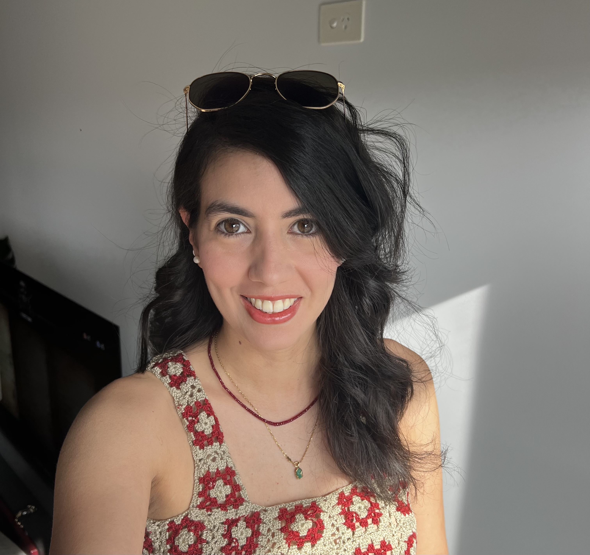

Sorel de Leon Vergara
Research Fellow & Doctor of Biomedical Engineering
Biomedical Engineering · RMIT University
Biomedical engineer with 4+ years of experience in the development of biomedical devices, with a proven track record of designing and delivering cortical implants for testing in vivo and in vitro. With degrees in biomedical and electronic engineering, I am passionate about the development of devices for the progression of health sciences — believing the future of society lies in the balance between technology and humanity. See more details on the projects I am currently working on below.
News
- Apr 2026 — New paper published in Analytica Chimica Acta: Evaluating MXene-doped PEDOT coating on carbon fiber microelectrodes for dual-functional neural interfacing.
- Dec 2025 — Congratulations to Rana Jaylani and Sian McConchie on completing their Capstone project and winning the top project overall at #EnGenius2025!
Research Projects
Carbon Fibres for Brain-Machine Interfaces
Development and characterisation of carbon fibre electrodes for cortical recording and seizure prediction, in collaboration with Carbon Cybernetics and RMIT University.
Smart-Bra: Impedance-Based Breast Cancer Monitoring
A wearable smart bra that uses bioelectrical impedance measurements for continuous, non-invasive monitoring of breast tissue changes associated with cancer progression.
Enable-i: EMG-Driven Prosthetics Control
Intramuscular EMG recording system enabling high-resolution neural signal acquisition for intuitive and reliable control of upper-limb prosthetic devices.
Simulating Neurons and Their Interactions with Electrodes in COMSOL
Finite element modelling of neuronal behaviour and electrode–tissue interfaces using COMSOL Multiphysics to inform the design and optimisation of neural recording and stimulation devices.
Neuromuscular Junctions In Vitro
Studying the formation and electrophysiology of neuromuscular junctions using in vitro models to advance understanding of motor neuron disease and drug screening.
Publications
- Jaylani R, McConchie S, Squires H, Goris T, Jung YJ, Higham S, Tong W, Quigley A, Ibbotson M, Garrett DJ, Prawer S, Cloherty S, Kapsa R, Ahnood A, De Leon SE. Modelling of intracortical microwire electrodes for brain-machine interfaces. [in preparation]
- Wang S, De Leon SE, Athavan N, Goris T, Jalilinejad N, Jung YJ, Garrett D, Ibbotson M, Prawer S, Tong W. Flexible conductive diamond electrodes for stable, multifunctional neural interfaces. [in preparation]
- Walliwala N, De Leon SE, Higham S, Jung YJ, Quigley A, Ibbotson M, Goris T, Tong W, Pirogova E, Kapsa R, Garrett D. Evaluation of electrodeposited (EIROF) and sputtered iridium (SIROF) carbon fibre microelectrodes for neural recording and stimulation. [in preparation]
- Higham SJ, De Leon SE, Jaylani R, Jiang Y, Nadarajah A, Goris T, Jung YJ, Stacey A, Cloherty SL, Ibbotson MR, Garrett DJ, Prawer S, Tong W. Spatially selective plasma modification of three-dimensional microstructures. [in preparation]
- De León SE, Jaylani R, Jung YJ, Jalilinejad N, Goris T, Higham S, Fox K, Ibbotson M, Prawer S, Houshyar S, Tong W, Garrett DJ. Evaluating MXene-doped PEDOT coating on carbon fiber microelectrodes for dual-functional neural interfacing. Analytica Chimica Acta. 2026;1407:345509. https://doi.org/10.1016/j.aca.2026.345509
- Higham S, Jung YJ, De Leon SE, Tong W, Au SLC, Shang Y, Wang H, Kalra M, Morokoff A, Maturana MI, Hilkes R, Ibbotson MR, Garrett DJ, Prawer S. Carbon Cybernetics Array: a miniaturized carbon-based microelectrode array for intracortical recording. bioRxiv. 2026. https://doi.org/10.64898/2026.01.06.696090
- Higham SJ, Rojas Cabrera JM, Kwak Y, Hong L, Chambers A, Nadarajah A, De Leon SE, Jung YJ, Jalilinejad N, Blaha C, Jang DP, Oh Y, Lee K, Stacey A, Cloherty SL, Ibbotson MR, Garrett DJ, Prawer S, Shin H, Tong W. Boron-Doped Nano-Crystalline Coated Carbon Fibers for Phasic Dopamine Sensing. Advanced Healthcare Materials. 2025. https://doi.org/10.1002/adhm.202503945
- Spencer MJ, Hosie S, Tong W, Shivdasani MN, Garrett DJ, De León SE, Brunton EK, Kameneva T, Grayden DB, Fallon JB, Ibbotson MR, Burkitt AN, Meffin H. Towards a closed loop retinal prosthesis: measuring electrically evoked retinal responses using large electrodes. Journal of Neural Engineering. 2025;22:046054. https://doi.org/10.1088/1741-2552/adfc9b
- De León SE, Higham S, Jung YJ, Tong W, Garrett DJ. Recent developments in microwire-structured intracortical electrode arrays for brain–machine interfaces. Bioengineering & Translational Medicine. 2024;e10742. https://doi.org/10.1002/btm2.10742
- Falahatdoost S, Prawer YDJ, Peng D, Chambers A, Zhan H, Pope L, Stacey A, Ahnood A, Al Hashem HN, De León SE, Garrett DJ, Fox K, Clark MB, Ibbotson MR, Prawer S, Tong W. Control of Neuronal Survival and Development Using Conductive Diamond. ACS Applied Materials & Interfaces. 2024;16:4361–4374. https://doi.org/10.1021/acsami.3c14680
- Edalati K, Higham S, De Leon SE, Au SLC, Nadarajah A, Prawer S, Garrett DJ. Effective removal of metal-carbide contamination from diamond circuit boards by reactive ion etching. Diamond & Related Materials. 2023;139:110329. https://doi.org/10.1016/j.diamond.2023.110329
- De Leon SE, Cleuren L, Oo ZY, Stoddart PR, McArthur SL. Extending In-Plane Impedance Measurements from 2D to 3D Cultures: Design Considerations. Bioengineering. 2021;8:11. https://doi.org/10.3390/bioengineering8010011
- De León SE, Pupovac A, McArthur SL. Three-Dimensional (3D) cell culture monitoring: Opportunities and challenges for impedance spectroscopy. Biotechnology and Bioengineering. 2020;117:1230–1240. https://doi.org/10.1002/bit.27270
Let's Work Together
Interested in collaboration, research partnerships, or just want to connect? I'd love to hear from you.
I'm open to research collaborations, academic partnerships, and conversations about biomedical engineering. Feel free to reach out through any of the channels below.